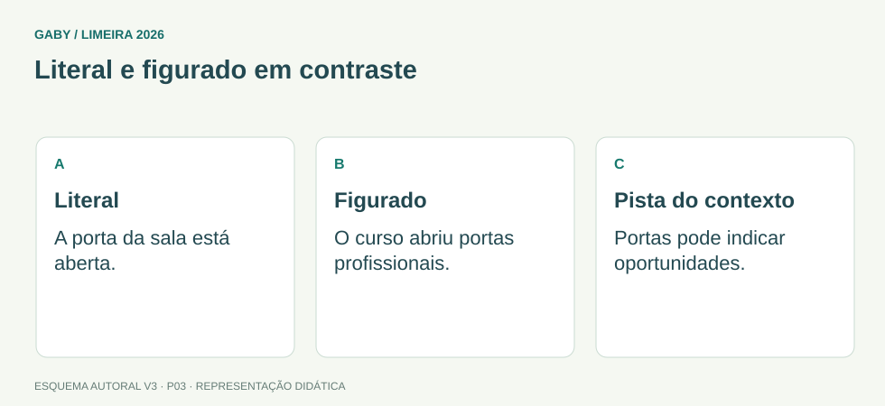

Objetivos do módulo
- Distinguir linguagem literal de figurada.
- Reconhecer metáfora, metonímia e ironia em exemplos simples.
- Interpretar o efeito produzido por escolhas figuradas.
- Diferenciar comparação, metáfora e catacrese, e classificar os tipos de metonímia.
- Reconhecer personificação, hipérbole, eufemismo, litote, antítese, paradoxo, perífrase, sinestesia e onomatopeia, distinguindo as figuras parecidas.
- Interpretar expressões idiomáticas e decidir, pelo contexto, entre leitura literal e figurada.
- Aplicar um roteiro aos formatos de questão mais comuns sobre figuras de linguagem.
Literal e figurado em contraste

Descrição em texto do esquema
- Literal: A porta da sala está aberta.
- Figurado: O curso abriu portas profissionais.
- Pista do contexto: Portas pode indicar oportunidades.
Oficina visual · aplique o esquema
Explique “a notícia caiu como uma bomba” sem usar outra metáfora.
Atividade autoral complementar da V3. Registre sua resposta; a resolução está no arquivo de gabarito e revisão.
Mapa do conteúdo
1. Denotação e conotação
Sentido próprio ou denotativo é o uso mais literal e convencional. Sentido figurado ou conotativo amplia ou desloca esse significado por associação. Em “a porta está aberta”, porta é literal; em “a educação abre portas”, “portas” representa oportunidades.
O contexto decide. A mesma palavra pode ser literal em uma frase e figurada em outra.
Como reconhecer o sentido próprio
Faça o teste da leitura literal: o significado de dicionário da palavra (o primeiro, o mais concreto) faz sentido naquela frase? Se fizer, o sentido é próprio (denotativo). Se a leitura literal ficar absurda ou impossível, a palavra foi levada para outro campo de sentido: está em sentido figurado (conotativo).
| Palavra | Sentido próprio (denotação) | Sentido figurado (conotação) | Pista do contexto |
|---|---|---|---|
| doce | “O bolo ficou doce demais.” (sabor) | “Ela tem um jeito doce de falar.” (gentileza) | Jeito de falar não tem sabor. |
| afogado | “O salva-vidas socorreu um banhista quase afogado.” | “Estou afogado em planilhas.” (sobrecarregado) | Planilha não é água. |
| cabeça | “Bateu a cabeça na porta.” (parte do corpo) | “Ela é a cabeça da equipe.” (líder) | Uma pessoa inteira ocupa o lugar da “cabeça”. |
| esfriar | “Deixe a sopa esfriar.” (temperatura) | “O entusiasmo esfriou depois da reunião.” (diminuiu) | Entusiasmo não tem temperatura. |
| degrau | “Cuidado com o último degrau da escada.” | “O estágio foi um degrau na carreira.” (etapa de progresso) | Carreira não é escada física. |
Três cuidados:
- O sentido é da frase, não da palavra isolada. “Cabeça” não é “uma palavra figurada”: ela está em sentido figurado em certas frases e em sentido próprio em outras.
- Linguagem técnica ou científica costuma ser literal. Quando a frase trata de medida, exame, fenômeno físico ou objeto concreto, o sentido normalmente é o próprio.
- Falar de poesia, sentimento ou beleza não torna a palavra figurada. Em “A lua cheia iluminava a estrada e emocionava os viajantes”, “lua” continua sendo o astro. Figurado é o emprego que troca o referente da palavra, não o tom da frase.
Linguagem figurada não é exclusiva da literatura: aparece em notícias, relatórios e conversas (“o preço disparou”, “a reunião esquentou”). As figuras de linguagem são os mecanismos que produzem esse deslocamento; as seções seguintes mostram cada uma delas.
Classificação: as gramáticas costumam agrupar as figuras em figuras de palavra (metáfora, comparação, metonímia, catacrese, sinestesia), de pensamento (antítese, paradoxo, hipérbole, eufemismo, ironia) e de som (onomatopeia), mas a distribuição varia de autor para autor; personificação, perífrase e litote aparecem em grupos diferentes conforme a obra. As questões deste assunto cobram o nome da figura e o efeito de sentido, não o grupo.
2. Metáfora
Metáfora aproxima realidades sem usar conectivo comparativo explícito. “Aquele servidor é uma ponte entre os setores” não o transforma fisicamente em ponte: atribui a ele a função de ligar partes.
Metáfora × comparação (símile)
As duas figuras aproximam dois elementos por uma semelhança. A diferença é de forma:
- Comparação (ou símile): a semelhança vem marcada por um conectivo comparativo explícito — como, tal qual, assim como, feito, que nem, qual — ou por expressões como semelhante a e parecido com. Ex.: “O corredor passou como um raio.”
- Metáfora: a semelhança fica implícita; um elemento é apresentado como se fosse o outro. Ex.: “O corredor é um raio.” ou apenas “O raio da equipe venceu de novo.”
Teste: procure o conectivo. Se a frase diz “X é como Y”, é comparação; se diz “X é Y” (ou usa só Y no lugar de X), é metáfora. Tirar o conectivo transforma a comparação em metáfora; acrescentá-lo faz o caminho inverso. Numa reescrita que deve “conservar a comparação”, os dois termos e o traço comum precisam continuar presentes.
Interpretar a metáfora: qual traço foi transferido?
A questão raramente pede só o nome da figura; costuma pedir o sentido. Pense no traço mais conhecido do elemento usado como imagem e aplique-o ao assunto da frase.
| Frase | Imagem | Traço transferido | Sentido na frase |
|---|---|---|---|
| “As vendas do mês são o termômetro da crise.” | termômetro | instrumento que mede | indicador do tamanho da crise |
| “A nova diretora foi o motor da mudança.” | motor | o que põe em movimento | quem impulsionou a mudança |
| “O setor virou um labirinto de formulários.” | labirinto | caminho confuso, difícil de sair | complicação, desorientação |
| “O professor foi um farol para a turma.” | farol | luz que orienta quem navega | referência, guia |
| “Aquele contrato era uma bomba-relógio.” | bomba-relógio | perigo que explode depois | problema grave que vai aparecer |
Erros típicos de alternativa: devolver a palavra ao sentido literal (“o termômetro mede a temperatura das lojas”) ou inverter o traço (“farol” como algo que confunde).
Catacrese: a metáfora que virou nome comum
Catacrese é uma metáfora tão gasta pelo uso que ninguém mais a percebe como imagem. Em geral, nasce porque a coisa não tinha nome próprio e a língua tomou emprestada uma palavra de outro campo, quase sempre do corpo humano: braço da poltrona, dente de alho, céu da boca, asa da xícara, boca do túnel, cabeça do prego.
- Metáfora: é escolha expressiva; existe uma forma literal disponível e o efeito de imagem é perceptível (“ela é a cabeça da equipe” = líder).
- Catacrese: é o nome usual da coisa; não há palavra literal mais comum para substituí-la e não se sente efeito de imagem (“o braço da poltrona”).
Pista da prova: enunciados que falam em “emprego convencional”, “metáfora desgastada” ou “palavra do corpo humano estendida a um objeto” apontam para catacrese. Catacrese não é erro: é o modo normal de nomear essas partes.
3. Metonímia
Metonímia ocorre por relação de proximidade: autor pela obra (“li Machado de Assis”), recipiente pelo conteúdo (“bebeu um copo”), instituição por seus agentes (“a prefeitura informou”). Não é semelhança; é associação.
Tipos de metonímia cobrados
Na metonímia, uma palavra ocupa o lugar de outra com a qual mantém uma relação real, objetiva (contiguidade): uma contém a outra, é parte dela, a produz ou a representa. Não há comparação por semelhança.
| Relação | Exemplo | O que se quer dizer |
|---|---|---|
| Autor pela obra | “Ouvimos Chiquinha Gonzaga no sarau.” | as músicas compostas por ela |
| Continente pelo conteúdo | “Comeu dois pratos de sopa.” | a sopa que estava nos pratos |
| Parte pelo todo (também chamada sinédoque) | “A família tem cinco bocas para alimentar.” | cinco pessoas |
| Marca pelo produto | “Tire um xerox do documento.” / “Comprei gilete.” | uma fotocópia, de qualquer máquina; lâmina de barbear, de qualquer fabricante |
| Lugar ou instituição pelas pessoas | “Brasília anunciou novos cortes.” / “A escola aplaudiu.” | o governo federal; alunos e funcionários |
| Símbolo pela ideia | “A coroa resistiu à revolta.” | a monarquia |
| Matéria pelo objeto | “Os cristais tilintaram no brinde.” | as taças feitas de cristal |
| Causa pelo efeito | “Vive do próprio trabalho.” | do dinheiro que o trabalho rende |
Marca pelo produto: o nome de uma marca passa a designar o tipo de produto, mesmo quando o objeto é de outro fabricante. Se alguém chama qualquer fita adesiva ou qualquer lâmina pelo nome de uma marca, a relação é marca pelo produto.
Muitas gramáticas tratam “parte pelo todo” como figura própria, a sinédoque; outras a incluem na metonímia. Nas provas de nível médio, a relação costuma ser cobrada como metonímia.
Metáfora ou metonímia?
Pergunte: os dois elementos se parecem ou estão ligados na realidade?
- “O gerente é uma raposa.” — gerente e raposa não têm ligação real; compartilham um traço (astúcia): metáfora.
- “O gerente contratou mais cabeças para o projeto.” — a cabeça é parte real da pessoa contratada: metonímia (parte pelo todo).
4. Ironia e efeitos
Ironia diz ou sugere algo em contraste com o sentido literal, geralmente para criticar ou produzir humor. Identificá-la exige contexto, porque isoladamente a frase pode parecer elogio.
A ironia aparece muitas vezes como elogio exagerado (“Que pontualidade admirável!”, para quem chegou uma hora atrasado) ou como crítica aparente. A pista é sempre a incompatibilidade entre o que se diz e a situação descrita.
Não confunda: na ironia, o sentido pretendido é o contrário do que se diz; no eufemismo, a ideia é a mesma, dita com palavras mais brandas; na litote, a pessoa afirma algo negando o seu oposto, com tom contido (seção 6).
5. Personificação (prosopopeia)
Personificação, também chamada prosopopeia, é atribuir a um ser não humano — objeto, animal, fenômeno da natureza ou ideia abstrata — ações, sentimentos ou falas próprios de pessoas.
- Objeto: “O despertador gritou às seis horas.”
- Natureza: “As árvores dançavam ao vento.”
- Ideia abstrata: “A saudade sentou-se ao meu lado no ônibus.”
Teste prático
Separe o ser de quem se fala e a ação ou qualidade atribuída a ele. Esse ser é capaz, literalmente, de fazer aquilo? Se a ação é típica de gente (falar, sussurrar, chorar, convidar, sorrir, dançar, ter raiva), há personificação. Se é algo que o ser realmente faz, a frase é literal.
| Frase | Classificação | Por quê |
|---|---|---|
| “A chuva molhou o quintal.” | Literal | A chuva de fato molha. |
| “A chuva chorava no telhado.” | Personificação | Chorar é ação humana. |
| “O mar derrubou o quiosque da praia.” | Literal | Ondas fortes podem destruir construções. |
| “O mar, furioso, atacava o cais.” | Personificação | Fúria é sentimento humano. |
A personificação também se apoia numa semelhança (a chuva que pinga lembra lágrimas), por isso algumas gramáticas a aproximam da metáfora. Quando a alternativa fala em “ação humana atribuída a um ser inanimado ou abstrato”, o nome esperado é personificação.
Personificação junto com metonímia
Uma frase pode ter duas figuras. Em “O estádio vaiou o juiz”, “estádio” representa as pessoas que estavam nele (metonímia: lugar pelas pessoas), e vaiar, ação humana, aparece atribuído a um lugar (efeito de personificação). Se a questão pergunta apenas se há linguagem figurada, a resposta é sim; se pergunta o que “estádio” representa, a resposta é o público, por metonímia.
6. Hipérbole, eufemismo e litote
As três figuras mexem na intensidade do que se diz: a hipérbole aumenta; o eufemismo e a litote suavizam.
Hipérbole
Hipérbole é o exagero intencional, que ninguém deve tomar ao pé da letra, usado para dar ênfase: “Estou morrendo de sede.”, “Faz séculos que não vou ao cinema.”, “Respondi cem e-mails antes do almoço.” (dito por quem respondeu uns quinze).
Teste: o número ou a intensidade é impossível ou claramente desproporcional à situação? Então é hipérbole. Cuidado com dois vizinhos:
- Repetição enfática (“Ele estava cansado, cansado, cansado”) intensifica repetindo a palavra, sem exagerar o fato; sozinha, não é hipérbole.
- Comparação (“forte como um touro”) aproxima dois elementos com conectivo; só será também hipérbole se o termo comparado for um exagero evidente (“mais alto que o céu”).
Eufemismo
Eufemismo é trocar uma palavra ou expressão dura, triste ou grosseira por outra mais suave. Serve para respeitar o leitor, a pessoa envolvida ou a situação.
| Forma suavizada | Ideia que ela atenua |
|---|---|
| “Ele faltou com a verdade.” | mentiu |
| “O paciente não resistiu.” / “Descansou.” | morreu |
| “A empresa fez um enxugamento do quadro.” | demitiu funcionários |
| “Ele está acima do peso.” | é gordo |
Teste: existe uma palavra mais direta e mais dura para dizer exatamente a mesma coisa? Se o autor a evitou para amenizar, é eufemismo. O contexto é decisivo: “descansou” só é eufemismo quando a frase trata de morte.
Litote
Litote é afirmar algo negando o seu contrário. Em vez de “ela é esperta”, diz-se “ela não é nada boba”; em vez de “é muito dinheiro”, “não é pouco dinheiro”; em vez de “o caminho é longo”, “o caminho não é dos mais curtos”. O efeito é uma afirmação contida, discreta, às vezes irônica.
Teste: há uma negação (não, nada, nem) diante de uma palavra de sentido oposto ao que se quer dizer? Troque “não + contrário” pela afirmação direta; se o sentido se mantém, é litote.
| Figura | Mecanismo | Exemplo |
|---|---|---|
| Hipérbole | aumenta pelo exagero | “Esperei mil anos na fila do banco.” |
| Eufemismo | suaviza trocando a palavra dura | “Ele faltou com a verdade.” |
| Litote | suaviza negando o contrário | “Ela não é nada boba.” |
| Ironia | diz o contrário do que pensa | “Que dia tranquilo!”, depois de uma tarde de problemas |
Há gramáticos que tratam a litote como uma variedade do eufemismo, porque ambos atenuam. Na prova, se a frase traz a negação do contrário, a classificação mais precisa é litote.
7. Antítese e paradoxo
As duas figuras trabalham com ideias opostas. A diferença está em a quem os opostos se referem.
Antítese
Antítese é a aproximação de palavras ou ideias de sentido contrário, cada uma ligada a um elemento, momento ou grupo diferente. A frase continua logicamente possível; o contraste só realça as diferenças.
- “Entre o sim do chefe e o não da equipe, o projeto ficou parado.”
- “Chegou pobre à cidade e saiu rico.”
- “Uns riam; outros choravam.”
Paradoxo (oxímoro)
Paradoxo é a união de ideias que se excluem no mesmo ser, ao mesmo tempo. Ao pé da letra, a frase parece impossível; o leitor precisa encontrar o sentido mais profundo que a contradição aparente revela. Quando a contradição se concentra numa expressão curta (substantivo e adjetivo opostos), muitos autores a chamam de oxímoro.
- “Aquela derrota foi a maior vitória do time.” (perder ensinou mais do que ganhar)
- “Era um cego que via mais longe que todos.” (não enxergava, mas compreendia melhor)
- “Sentia uma alegria triste na despedida.” (oxímoro)
Teste rápido
| Pergunta | Antítese | Paradoxo |
|---|---|---|
| A quem se referem os opostos? | a elementos diferentes (uns × outros, antes × depois) | ao mesmo elemento, ao mesmo tempo |
| A leitura literal é possível? | sim | parece impossível (contradição aparente) |
| Exemplo | “Chegou pobre e saiu rico.” | “uma alegria triste” |
8. Perífrase, sinestesia e onomatopeia
Perífrase e antonomásia
Perífrase é substituir o nome de um ser por uma expressão mais longa que destaca uma característica marcante dele: o rei dos animais (o leão), o ouro negro (o petróleo), a Cidade Maravilhosa (o Rio de Janeiro), o melhor amigo do homem (o cão).
Antonomásia é a mesma operação aplicada a uma pessoa: um apelido descritivo no lugar do nome próprio, como o Poeta dos Escravos (Castro Alves). Os autores divergem sobre a fronteira entre as duas: alguns as tratam como a mesma figura, outros consideram a antonomásia um tipo de perífrase. O que importa na prova é reconhecer a operação: uma descrição ocupa o lugar do nome.
Diferença para a metonímia: a metonímia usa uma palavra relacionada (“Brasília decidiu”); a perífrase usa uma descrição que define o ser (“a capital federal decidiu”).
Sinestesia
Sinestesia é a mistura, numa mesma expressão, de sensações percebidas por sentidos diferentes (visão, audição, tato, paladar, olfato).
| Expressão | Sentidos combinados |
|---|---|
| “som áspero” | audição + tato |
| “perfume doce” | olfato + paladar |
| “cor gritante” | visão + audição |
| “palavras amargas” | audição + paladar |
| “luz macia” | visão + tato |
Teste: veja a que sentido pertence o substantivo e a que sentido pertence o adjetivo (ou verbo) ligado a ele. Se forem dois sentidos diferentes, é sinestesia. Se há um só sentido (“som alto”, “perfume suave”), não há sinestesia.
Onomatopeia
Onomatopeia é a palavra que imita, de modo aproximado, um som ou ruído: trim-trim (telefone), toc-toc (batida na porta), zum-zum (abelhas), au-au, bum!, tchibum. Há também palavras do vocabulário comum formadas a partir de um som imitado, como cacarejo e ribombar. Teste: lida em voz alta, a palavra lembra o próprio barulho? Palavras como “ruído” ou “batida” apenas nomeiam o som; não o imitam.
Grafia: pela Base IX, item 3, do Acordo Ortográfico de 1990, não se acentuam os ditongos “ei” e “oi” da sílaba tônica das paroxítonas (como em assembleia e ideia). Por isso se escreve onomatopeia e prosopopeia, sem acento.
9. Expressões idiomáticas e sentido em contexto
Expressão idiomática (também chamada idiomatismo ou frase feita) é um grupo fixo de palavras cujo sentido não resulta da soma do sentido de cada palavra. Por isso não pode ser lida ao pé da letra nem traduzida palavra por palavra.
| Expressão | Sentido idiomático |
|---|---|
| pisar na bola | errar, falhar com alguém |
| engolir sapo | aceitar uma ofensa ou situação desagradável sem reagir |
| abrir o jogo | revelar a verdade, falar com franqueza |
| ficar de braços cruzados | não agir diante de um problema |
| matar dois coelhos com uma cajadada só | resolver duas coisas com uma única ação |
| dar o braço a torcer | admitir o erro, ceder |
| tirar o cavalinho da chuva | desistir de uma pretensão |
| custar os olhos da cara | ser muito caro |
Idiomática ou literal?
A mesma sequência de palavras pode ser idiomática numa frase e literal em outra. O contexto decide:
- “No treino, o atacante pisou na bola e torceu o tornozelo.” — literal: houve bola e pé.
- “Ele pisou na bola ao esquecer o aniversário da mãe.” — idiomática: errou.
Teste: imagine a cena descrita ao pé da letra. Se ela não combina com o assunto da frase (não há bola, sapo, jogo ou cavalo na situação), a leitura é idiomática. Questões que pedem “a expressão usada em sentido próprio, sem ser frase feita” querem justamente a alternativa em que a cena literal acontece de verdade.
Expressão idiomática × provérbio: o provérbio é uma frase completa que transmite um ensinamento (“Quem semeia vento colhe tempestade”); a expressão idiomática é um pedaço de frase que nomeia uma ação ou situação (“engolir sapo”) e se encaixa em frases diferentes.
Muitas expressões idiomáticas nasceram de metáforas ou de hipérboles (“custar os olhos da cara” é um exagero). Se a questão perguntar o sentido, explique a expressão inteira; se perguntar a figura, veja qual mecanismo a originou.
10. Como a banca pede para identificar a figura
Formatos mais comuns
| Como a questão pede | O que fazer |
|---|---|
| “Assinale a alternativa em que a palavra destacada está em sentido figurado (ou próprio).” | Aplique o teste da leitura literal em cada alternativa. Normalmente uma só foge ao padrão das outras. |
| “Em [trecho], a expressão X significa / indica…” | Identifique o traço transferido e escolha a paráfrase. Elimine a alternativa que volta ao sentido literal e a que inverte o sentido. |
| “Ocorre [nome da figura] em…” / “O trecho exemplifica…” | Reconheça o mecanismo com o quadro abaixo. |
| “A relação estabelecida é de…” (parte pelo todo, autor pela obra, marca pelo produto) | Descubra qual palavra está no lugar de qual e nomeie a relação real entre elas. |
| “Qual reescrita conserva a comparação / o sentido?” | A reescrita deve manter os dois termos e a relação entre eles, sem transformar a imagem em fato literal. |
| “A expressão não deve ser entendida literalmente porque…” | Explique o sentido idiomático e mostre que a cena literal não combina com o contexto. |
Roteiro em quatro passos
- Leia a frase inteira e diga, com suas palavras, o que ela comunica.
- Teste a leitura literal da palavra ou expressão destacada.
- Se for figurada, descubra o mecanismo: semelhança, relação real, exagero, atenuação, oposição, ação humana, mistura de sentidos, imitação de som ou descrição no lugar do nome.
- Confira as marcas formais: conectivo comparativo, negação do contrário, dois sentidos diferentes, ser não humano com ação humana.
Quadro das figuras parecidas
| Par | Como diferenciar | Exemplo |
|---|---|---|
| Comparação × metáfora | Comparação tem conectivo (como, tal qual); metáfora não. | “Trabalha como uma formiga.” × “Ele é uma formiga no trabalho.” |
| Metáfora × catacrese | Na catacrese, a imagem já virou o nome comum da coisa. | “Ela é a alma da festa.” × “o pé da cadeira” |
| Metáfora × metonímia | Metáfora: semelhança. Metonímia: relação real (parte, autor, recipiente, marca, lugar). | “O goleiro é uma muralha.” × “O time precisa de pernas novas.” (jogadores) |
| Metonímia × perífrase | Metonímia: uma palavra relacionada. Perífrase: descrição de uma característica no lugar do nome. | “Li Jorge Amado.” × “o rei dos animais” |
| Personificação × sentido literal | Só há personificação se a ação for típica de pessoas. | “A porta rangeu.” × “A porta reclamou com um rangido.” |
| Hipérbole × litote | Hipérbole aumenta; litote afirma com contenção, negando o contrário. | “Comi um boi.” × “Não comi pouco.” |
| Eufemismo × litote | Eufemismo troca a palavra dura; litote usa a negação do contrário. | “Faltou com a verdade.” × “Não foi muito sincero.” |
| Eufemismo × ironia | Eufemismo suaviza mantendo o sentido; ironia diz o contrário do que pensa. | “Está acima do peso.” × “Que dieta eficiente!” (para quem engordou) |
| Antítese × paradoxo | Antítese: opostos em elementos diferentes. Paradoxo: opostos no mesmo elemento. | “Uns riam; outros choravam.” × “uma alegria triste” |
| Sinestesia × metáfora | Sinestesia exige dois sentidos físicos diferentes na mesma expressão. | “perfume doce” × “Ela é um doce de pessoa.” |
| Onomatopeia × nome do som | Onomatopeia imita o som; “ruído”, “batida” só o nomeiam. | “toc-toc” × “batida” |
| Expressão idiomática × literal | Idiomática: a cena literal não existe no contexto. | “Engoliu sapo do chefe.” × “A cobra engoliu um sapo.” |
Exemplos resolvidos passo a passo
Exemplo 1
Situação: “A burocracia engoliu o pedido.”
Exemplo 2
Situação: “Li Clarice Lispector nas férias.”
Exemplo 3
Situação: Depois de três falhas seguidas, alguém diz “Que sistema perfeito!”.
Exemplo 4
Situação: Compare “O novo coordenador é um trator: passa por cima de qualquer obstáculo.” e “O coordenador avançou sobre os prazos como um trator.” Qual frase traz metáfora e qual traz comparação?
Exemplo 5
Situação: Classifique a figura em (a) “Uns comemoravam; outros lamentavam.” e (b) “Era uma solidão povoada de lembranças.”
Exemplo 6
Situação: Sobre o novo estagiário, a supervisora comentou: “Ele não é nada lento.” Que figura ocorre e o que ela afirma?
Exemplo 7
Situação: “Depois de muita insistência da equipe, o diretor deu o braço a torcer e aprovou a reforma.” A expressão deve ser lida literalmente?
Pegadinhas e erros frequentes
- Achar que toda comparação é metáfora.
- Confundir metonímia (proximidade) com metáfora (semelhança).
- Ignorar o contexto na identificação de ironia.
- Tratar todo “como” como comparação: ele também indica causa (“Como choveu…”) ou função (“trabalha como recepcionista”).
- Achar que catacrese é erro: é o nome usual da coisa, formado por uma metáfora desgastada.
- Confundir antítese (opostos em elementos diferentes) com paradoxo (opostos no mesmo elemento).
- Chamar de hipérbole a simples repetição enfática (“cansado, cansado, cansado”).
- Confundir eufemismo (troca da palavra dura), litote (negação do contrário) e ironia (sentido contrário ao dito).
- Ver personificação em ação que o ser realmente pratica (“a chuva molhou o quintal” é literal).
- Apontar sinestesia quando só um sentido está envolvido.
- Achar que falar de poesia ou emoção torna a palavra figurada, ou ler ao pé da letra uma expressão idiomática.
Resumo de prova
- Denotação = literal; conotação = figurada.
- Metáfora transfere traços por semelhança.
- Metonímia substitui por proximidade/associação.
- Ironia depende do contraste contextual.
- Comparação = semelhança com conectivo (como, tal qual); metáfora = semelhança implícita.
- Catacrese = metáfora gasta que virou nome comum (braço da poltrona).
- Metonímia: autor pela obra, continente pelo conteúdo, parte pelo todo, marca pelo produto, lugar pelas pessoas.
- Personificação (prosopopeia) = ação ou sentimento humano atribuído a ser não humano.
- Hipérbole aumenta; eufemismo troca por palavra suave; litote nega o contrário.
- Antítese: opostos em elementos diferentes; paradoxo (oxímoro): opostos no mesmo elemento.
- Perífrase: descrição no lugar do nome (o rei dos animais); antonomásia, quando se trata de pessoa.
- Sinestesia mistura dois sentidos; onomatopeia imita um som.
- Expressão idiomática: o sentido é do conjunto; o contexto decide se a leitura é literal.
Exercícios do módulo
Resolva sem consultar o arquivo de gabarito. As questões são autorais e construídas para treinar os conceitos do edital.
- jurídico
- literal
- figurado
- técnico
- metáfora
- metonímia
- antônimo
- hipérbato
- metáfora
- ironia
- denotação pura
- metonímia
- irônico
- metonímico
- figurativo
- literal
- eufonia
- ironia
- denotação
- sinonímia
- proximidade administrativa
- semelhança de traços
- ordem alfabética
- oposição lógica
- rima
- antônimo
- concordância
- associação ou contiguidade
- erro gramatical
- termo técnico
- literal
- figurado
- do número de sílabas
- do tamanho da palavra
- do contexto
- da posição na linha
- metonímia institucional
- metáfora necessariamente
- ironia obrigatória
- antonímia
Quando terminar, abra Português 03 - Sentido Próprio e Figurado - Gabarito e Revisão.
Checklist de domínio
- ☐ Distinguir linguagem literal de figurada.
- ☐ Reconhecer metáfora, metonímia e ironia em exemplos simples.
- ☐ Interpretar o efeito produzido por escolhas figuradas.
- ☐ Diferenciar comparação, metáfora e catacrese, e classificar os tipos de metonímia.
- ☐ Reconhecer personificação, hipérbole, eufemismo, litote, antítese, paradoxo, perífrase, sinestesia e onomatopeia.
- ☐ Interpretar expressões idiomáticas e decidir, pelo contexto, entre leitura literal e figurada.
- ☐ Aplicar o roteiro de quatro passos e o quadro das figuras parecidas.
Meta do módulo: 80% ou mais nas questões, sem depender de consulta.
Referências e conteúdos auxiliares
- Inep — Matrizes e escalas do SaebApoio às habilidades de leitura e interpretação. Não corresponde à matriz do concurso de Limeira.
- Presidência da República — Manual de Redação, 3ª ediçãoClareza, redação oficial, concordância, regência e pontuação. Referência de apoio; modelos locais podem ter regras próprias.
- UFMS — Cursinho, “Figuras de linguagem” (Flávia Andrade)Conferidas a classificação em figuras de som, palavra, pensamento e construção e as definições de comparação (com conectivos como “como” e “assim como”), metáfora (comparação implícita), metonímia, catacrese (metáforas que se tornaram habituais), sinestesia, eufemismo, hipérbole, prosopopeia, antítese, paradoxo e ironia. Conferido em 18/11/2026.
- UERJ — Dissertação “A litote sob a perspectiva da Linguística Funcional Centrada no Uso” (2019)Conferida a definição tradicional de litote (declaração de algo pela negação do seu contrário), seu efeito de atenuação e a posição de gramáticos que a tratam como variedade do eufemismo. Conferido em 18/11/2026.
- Ciberdúvidas — Sentidos próprio e figuradoConsultório de Portugal, usado só para confirmar definições. Conferida a correspondência entre sentido próprio e denotação e entre sentido figurado e conotação. Conferido em 18/11/2026.
- Ciberdúvidas — Metáfora, metonímia e sentido figuradoConferida a distinção entre metáfora (semelhança implícita) e metonímia (contiguidade, não semelhança). Conferido em 18/11/2026.
- Ciberdúvidas — Metonímia e sinédoqueConferido que a sinédoque (parte pelo todo) é tratada como um dos casos de metonímia. Conferido em 18/11/2026.
- Ciberdúvidas — Antonomásia e perífraseConferidas a definição de perífrase (expressão mais longa que destaca uma característica do ser nomeado) e a sobreposição com a antonomásia. Conferido em 18/11/2026.
- Ciberdúvidas — Litotes e antonomásiaConferidas as definições de litote (afirmar negando o contrário) e de antonomásia (troca de nome próprio por nome comum ou perífrase). Conferido em 18/11/2026.
- Ciberdúvidas — OnomatopeiaConferida a definição de onomatopeia (palavra que imita um som natural) e exemplos como cacarejo e ribombar. Conferido em 18/11/2026.
- Ciberdúvidas — Provérbio e expressão idiomáticaConferidos o sentido não composicional da expressão idiomática (não resulta da soma das palavras) e a diferença para o provérbio. Conferido em 18/11/2026.
- Decreto nº 6.583/2008 — Acordo Ortográfico (Planalto)Conferida a Base IX, item 3: não se acentuam os ditongos “ei” e “oi” tônicos das paroxítonas (assembleia, ideia, onomatopeico). Conferido em 18/11/2026.
Referências externas de apoio consultadas para a V3 em 27/09/2026. A origem das questões é o material autoral do projeto; estes links não indicam que uma instituição publicou ou validou os exercícios. As páginas externas precisam de internet. Em informática, confira a versão do programa; em legislação, observe o recorte e as regras de atualização do edital.